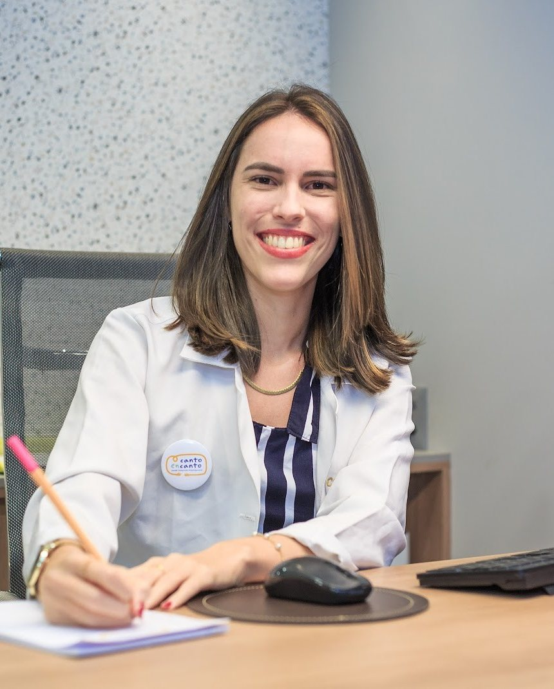
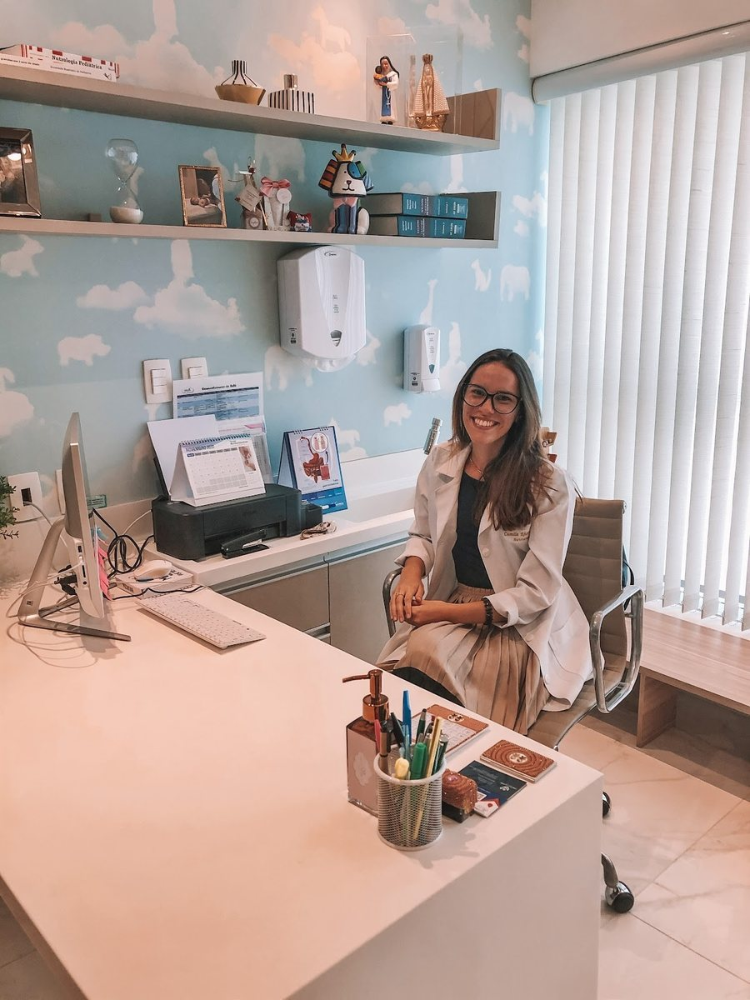

Nutricionista materno-infantil · CRN-5 11997
Camila Rheinschmitt
Da gestação ao primeiro ano do bebê — e à mesa da família depois dele.
Nutricionista formada pela UFBA, a Camila acompanha gestantes, mães que amamentam, bebês na introdução alimentar e crianças com dificuldades à mesa, com informação segura e um plano possível para a rotina de cada família. Consultório em Buraquinho, Lauro de Freitas.
5,0★★★★★50 avaliações no Google
Por onde começar
Em que fase vocês estão?
Cada fase tem uma página para ler com calma antes da consulta. A informação é geral; o plano é individual, definido na consulta.
Estou grávida
O que comer, o que evitar e como lidar com enjoo e fome.
Gestação Pós-partoEstou amamentando
A alimentação de quem amamenta, sem mitos sobre o leite.
Amamentação BebêMeu bebê vai começar a comer
BLW ou tradicional, cortes e segurança à mesa.
Introdução alimentar CriançaA hora de comer virou briga
Recusa, seletividade e a rotina das refeições.
Dificuldades alimentaresDa gestação ao primeiro ano
Uma linha do tempo, e o que a Camila acompanha em cada fase.
Os temas são os que ela mesma publica. Em cada fase, uma frase dela, com o link para a publicação.
- Gestação
A gravidez à mesa
Alimentação segura e possível com enjoo, fome e rotina de trabalho; o que evitar e por quê.
“Muitos chás e ervas não têm estudos suficientes que garantam segurança durante a gravidez.”Camila, no Instagram
- Pós-parto
Quem amamenta também come
Energia, água e refeições práticas com um recém-nascido em casa — e os mitos sobre o leite.
“ainda não podemos afirmar que um alimento realmente aumenta a produção do leite”Camila, no Instagram
- Por volta dos 6 meses
Introdução alimentar
BLW ou tradicional, cortes, texturas e como oferecer com mais segurança.
“Uma novidade de cada vez!”Camila, no Instagram
- Até o primeiro ano
Repertório e segurança
Variedade ao longo do dia, um alimento novo por vez e o que fica para depois de 1 ano.
“O mel pode carregar esporos da bactéria responsável pelo botulismo infantil.”Camila, no Instagram
- E depois
A criança à mesa
Recusa, seletividade e a rotina das refeições, sem brigas e sem pressa.
“A hora de comer não deve ser um momento de estresse.”Camila, no Instagram
Como é a primeira consulta
Cinco etapas, no ritmo da sua família.
Hévila F. escreveu no Google que a Camila “não deixa você sair com nenhuma dúvida”. É assim que a primeira consulta costuma se organizar; os detalhes do seu caso são combinados no agendamento.
- Agendamento
Pelo WhatsApp (71) 99726-6787. Conte em que fase vocês estão: gestação, amamentação, introdução alimentar ou uma criança maior.
- Escuta
A história até aqui — gestação, parto, amamentação ou as refeições da criança — e a rotina real da família.
- Avaliação nutricional
Medidas, curvas da caderneta, exames que você levar e o que se come em casa, sem julgamento.
- Orientação
Um plano alimentar possível para a sua rotina, explicado com calma. O plano é individual, definido na consulta.
- Retorno
O acompanhamento segue a fase: os retornos e os intervalos são combinados com a Camila.

Nas palavras dela
“Tornar esse processo mais leve.”
“Sei que a gente fica até perdida com tanta informação, por isso eu estou aqui para te ajudar a tornar esse processo mais leve, com informações seguras e o apoio necessário para essa fase de descobertas, tão importante para o bebê.”
Camila Rheinschmitt, no Instagram · ver a publicação
Trajetória
Do esporte ao materno-infantil.
“Meu caminho na nutrição começou lá na área esportiva, até que descobri minha paixão na área materno infantil.” — Camila, no Instagram
- UFBABacharelado em Nutrição
Graduada pela Universidade Federal da Bahia.
Fonte: LinkedIn - ComeçoA área esportiva
Estágio e depois head nutri da Rede SNC Salvador, antes de descobrir o materno-infantil.
Fonte: LinkedIn - 2018Atendimento clínico
Atuação clínica desde agosto de 2018; no Mais Empresarial desde maio de 2019.
Fonte: LinkedIn - 2021Empresa própria
CG Rheinschmitt Serviços de Nutrição, aberta em 19/11/2021, com a Camila como sócia-administradora.
Fonte: Receita Federal - Hoje5,0 em 50 avaliações
CRN-5 11997 ativo no conselho e nota 5,0 no perfil do Google.
Fonte: CFN e Google
Avaliações
5,0 no Google, em 50 avaliações.
Trechos curtos de avaliações públicas do perfil da Camila, sobre o atendimento. Nomes abreviados.
A Camila é super atenciosa, explica tudo com muita clareza e não deixa você sair com nenhuma dúvida.
gostei muito da forma como ela explicou tudo e das informações que compartilhou sobre introdução alimentar.
Ótimo atendimento, a Dra Camila é muito simpática e esclarece todas as dúvidas de forma muito clara.
A consulta de introdução alimentar do meu filho foi excelente. Muito esclarecedora e me deu segurança para iniciar!
Dra. Camila é muito atenciosa, humana, prestativa
Amei o atendimento e atenção da Dra Camila … Tudo muito tranquilo, descomplicado
No Instagram
O que ela explica nas legendas.
A Camila publica no @camilagrnut sobre cada fase. Seis temas para começar — os links abrem a publicação.
“Não precisa ter pressa para apresentar os alimentos para o seu bebê na introdução alimentar.”
Ver no Instagram →AmamentaçãoO que a literatura diz sobre o leite“a produção de leite depende principalmente de 4 fatores centrais […]”
Ver no Instagram →Nutrição infantilNutrição infantil não é frescura“ter informação ajuda a tornar as escolhas mais simples e dá mais segurança […]”
Ver no Instagram →Afeto e comidaO gostinho da infância“criar memórias cheias de sabor, afeto e cuidado […]”
Ver no Instagram →EngasgoCom @juntospelonascimentoConversa em vídeo sobre como oferecer os alimentos com mais segurança e confiança.
Ver no Instagram →GestaçãoChás, ervas e carne cruaLegendas sobre o que evitar na gravidez e por quê, como o risco de toxoplasmose.
Ver no Instagram →
Consultório
Edifício Mais Empresarial, Buraquinho.
No complexo do Mais Hotel, em Lauro de Freitas. A sala tem parede de nuvens e prateleiras claras. Veja o consultório.

Camila Rheinschmitt · NutricionistaEdifício Mais Empresarial · R. João Chagas Ortins de Freitas, 610 · Buraquinho, Lauro de Freitas – BA · 42700-000
Atendimento com hora marcada
Horário do perfil da Camila no Google. Atendimento com hora marcada — confirme pelo WhatsApp.
Dúvidas frequentes
Perguntas comuns
Onde fica o consultório?
No Edifício Mais Empresarial, no complexo do Mais Hotel: R. João Chagas Ortins de Freitas, 610, Buraquinho, Lauro de Freitas. Veja o consultório e o mapa.
Quais são os horários?
Segunda, das 14h às 19h; terça e quinta, das 8h às 13h, segundo o perfil da Camila no Google. Atendimento com hora marcada — confirme pelo WhatsApp.
A Camila atende gestantes?
Sim. A gestação é uma das fases sobre as quais ela publica e que acompanha, ao lado da amamentação, da introdução alimentar e da infância.
Quando marcar a consulta de introdução alimentar?
A introdução alimentar costuma começar por volta dos 6 meses, combinada com o pediatra. Muitas famílias conversam com a nutricionista antes do início; pergunte pelo WhatsApp o momento indicado para o seu bebê.
Em quanto tempo meu filho vai aceitar mais alimentos?
Não há prazo nem promessa: cada criança tem o seu ritmo. A consulta ajuda a entender a rotina e a organizar as refeições com mais tranquilidade. O plano é individual, definido na consulta.
Como funcionam valores, pagamento e convênio?
Essas informações são passadas pelo WhatsApp (71) 99726-6787.
Agende
Comece pela primeira consulta.
No Edifício Mais Empresarial, em Buraquinho, Lauro de Freitas. O agendamento é pelo WhatsApp (71) 99726-6787.